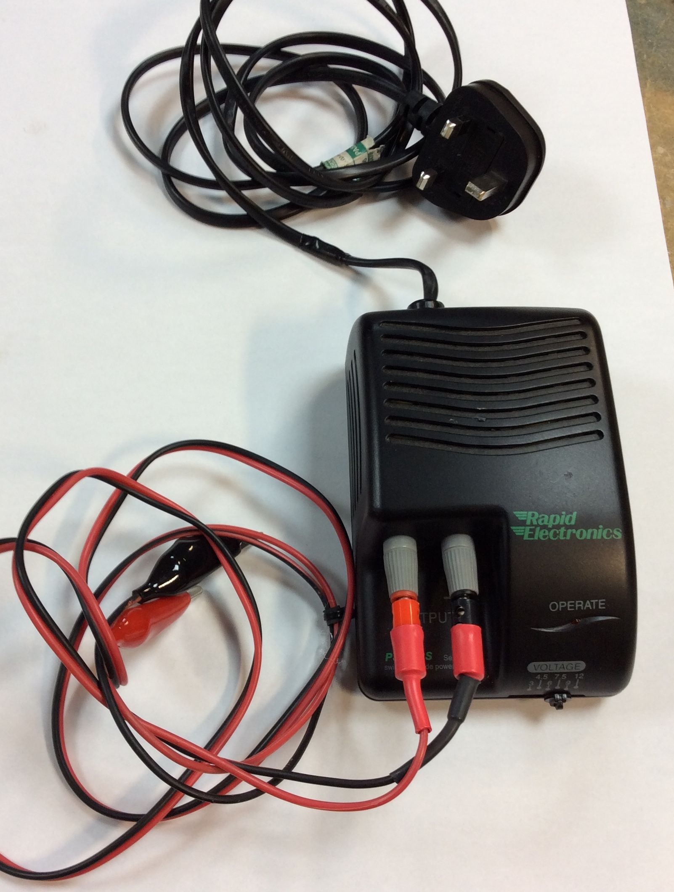
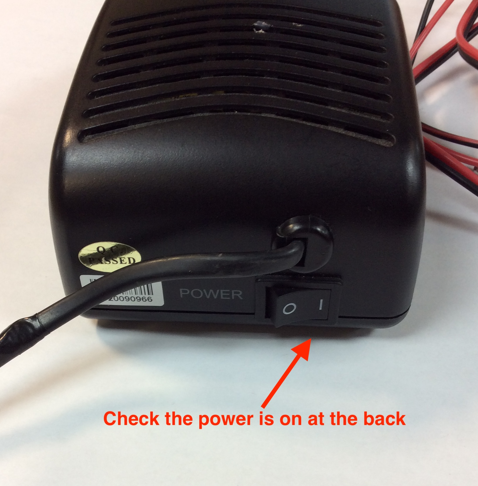
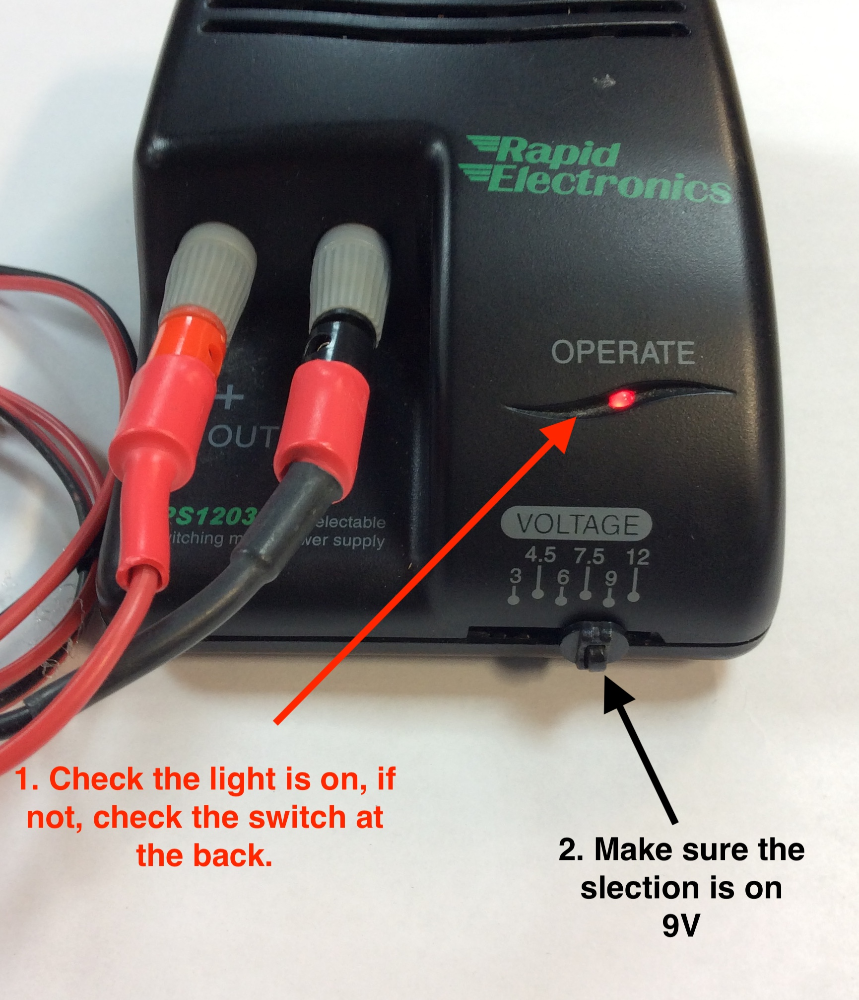
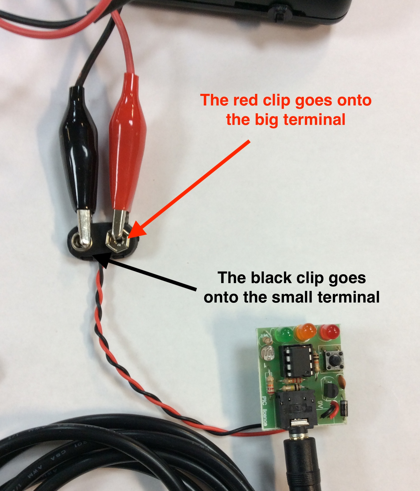
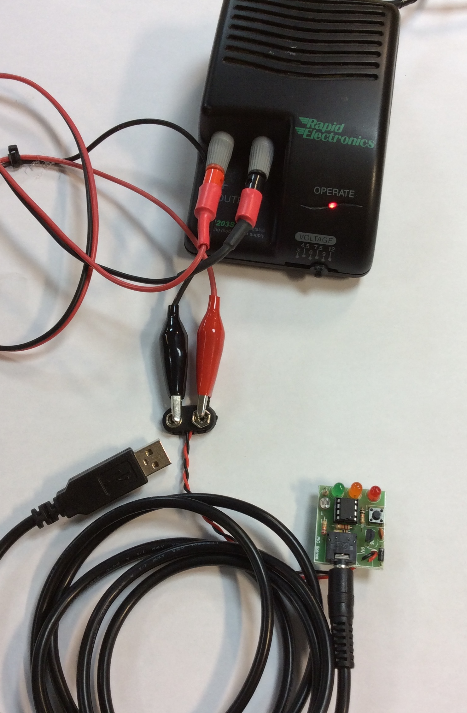
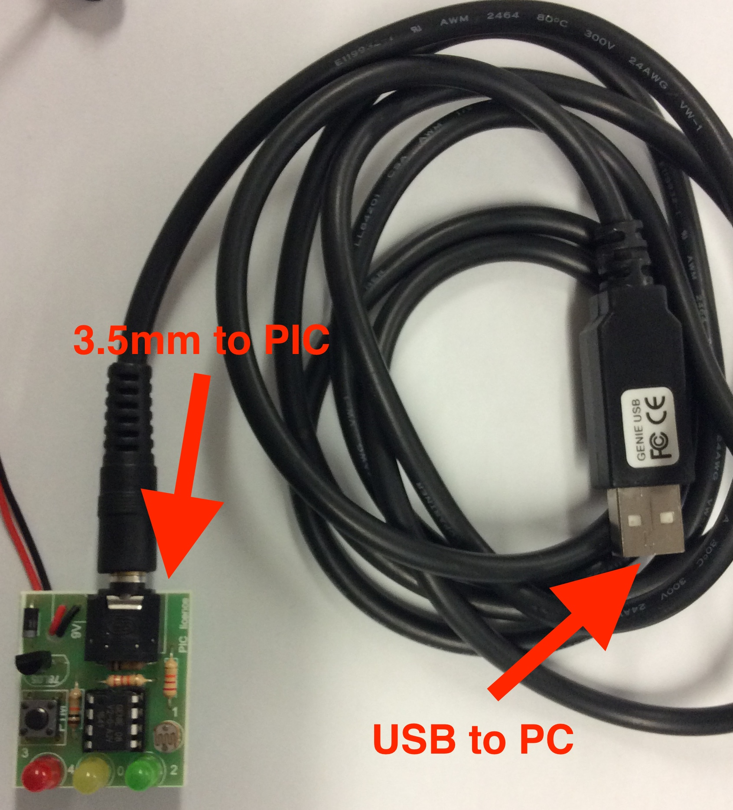

Board Testing and Programming
Table of Contents
1 PCB Testing
By this point, you should have a fully soldered together PCB (with a chip), a download socket and a method of providing 3V to the circuit. In this lesson, we'll test our PCB to ensure its working.
Hardware Test
- In order to connect the microcontroller to the computer, you will need a power supply and a download cable.
- Below is a picture of the power supply and how to connect it.

- First, make sure the switch on the back in on.

- Second, Make sure the voltage is set to 9V.

- Third, Connect the power supply to the battery snap, using the crocodile clips from the power supply.

- Below is what it should look like with only the USB needing to be connected to the computer. The 3.5mm stereo jack is already connected in the picture to the PCB.
- The is a plug behind each computer monitor to plug in the power supply.

- When a PIC chip initially boots (starts) up, it briefly pulses output 0, which we happen to have an LED connected to.
- Connect the 0V (negative) pin of your power connector to the PCB, then connect the positive power pin to the PCB while looking at the LEDs on the board.
- If the left-hand LED (red in my examples) flashes for a split-second, then your Genie chip is receiving power, and at least one of your LEDs is working.
- If it doesn't, then something isn't right. You might have dry joints, you could have made a solder bridge, the power connectors might be backwards, the batteries could be flat or the Genie chip might be upside down. Make sure your LED pulses before you move on to the next step.
2 PC Connectivity Test
Connect It
- We can now test the remainder of the PCB and your download cable by connecting your board to Circuit Wizard. You'll need a USB Genie Download cable from the teacher to do this.
- Plug the download cable into the USB port of the computer, a dialogue box will appear stating the cable is connected. Click 'OK'.
- Connect power to the PCB, then connect the other side of the download cable (3.2mm stereo jack) into the download socket on the PCB.

- If you've done everything correctly, on the top right-hand side of the Circuit Wizard screen should now show you a "Connected GENIE 08" message, and the bottom-left LED should blink continously as data is exchanged between the PC and your circuit. Congratulations!
- If it hasn't come up as connected, there are a few reasons this could be:
- Check with a multimeter that there is 3V across pins 1 and 8.
- Check that the pins going into the download socket are in the right order. I used black, grey and white in mine, but yours are likely to be different. Is there a 22k resistor on your download socket?
- Is Circuit Wizard 'seeing' the download cable? Double-check the PC settings. Try plugging someone elses' (working) PCB into your computer with your power supply.
- Check that the 100k and 22k resistors are working correctly by using the resistance setting on a multimeter.
3 I/O Test
Test it
- Now that the PCB is connected to the computer, we can test the input (i.e. the LDR) and output components (i.e. the LEDs) using Circuit Wizard, before we start writing software. This will also afford us the opportunity to get some calibration data for your LDR.
- When connected to your PCB, the right-hand side of the Circuit Wizard window will show you a number of options…

- We'll check the LEDs first, so will use the "Control Device" option. Click this, and then set the "Mode" of your chip to "2 Inputs, 3 Outpus (G0-G2)".
- You can now turn on and off the LEDs by clicking the relevant output, near the "OUT" label.
- Note: Because it is used to communicate with the PC, you can't control G0 from this screen. The fact that the LED is blinking constantly confirms it works, though.
- Once you're happy that your LEDs work, click the "Cancel" button. We're now going to test the LDR is working properly.
- Choose "Calibrate sensor" from the right-hand menu. You'll see a numeric value between 0-255, which in this case represents the light level where you are. By covering and uncovering the sensor, you should see the value change, proving that your LDR is working correctly.
- Make a note somewhere of what value the LDR gives under standard classroom lighting, and the value when it is covered up. This will be vital later in getting your programs to work.
4 First Program
We've now got a working PCB that we can write software for. In this stage, we'll test some programs.
Pushing a program to a PIC chip.
- Load Circuit Wizard, then open your FirstPIC.cwz program while your PCB is connected to the computer. Click the "Run Live" button, and your program will be uploaded after a few seconds. You can then unplug your PCB from the computer and remove the download cable. Whenever the PCB is powered up, it'll make the LEDs blink on and off.
Debugging a program
- Connect the PCB back up to the computer, so it is connected in Circuit Wizard. Click "Debug Live", then the "Start" button.
- Ignore what's happening on the left-hand side of the screen for a moment, and click on the option that says, "View several panels at once".
- In debug mode, you can monitor exactly what your Genie chip is doing, and which instruction it is running in real-time.
- You can also see which inputs and outputs are turned on, and use this information to help fix any issues (bugs) in your code.
- The jog-wheel (shown as a circle just above the "Close" button allows you to slow the speed at which the program runs. This can be handy when there's a lot going on. Try this now.
- Remember that while you are debugging, you won't be able to control the left-most LED, which will blink constantly while you are working. As soon as your PCB isn't connected to the computer, it will behave as it should, though.
5 Analogue programming
Calibrate It
- Load up your "my analogue program.cwz" work that you produced in step 1.
- Using the figures you obtained in step 3, modify the values of your analogue decision diamonds to make your program work.
- You might want to use the "Calibrate Sensor" option again. Double-check that the mode is set to "2 inputs, 3 outputs (G0-G2)".
- You might want to use the "Debug Live" feature to make sure the program is behaving how you expect before running live.
6 Assessment Point
Assessment Point
- Take screenshots of your working analogue program, and write a few sentences describing how you modified your program, and the steps you took to ensure it worked correctly in a text document. Upload these pictures and the text document.
- For the platinum task, write the same analogue program in GenieBasic. A video tutorial is available on the open drive on how to do this. Click the link here to go to the file with the video.
- Gold Badge - Progress ladder, Blue - Test programs both in simulations and live, adapting code to compensate for any differences as needed.
- Platinum Badge - Progress ladder, Violet - Use a text-based language to write a short PIC program.